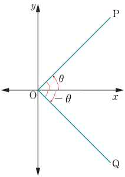
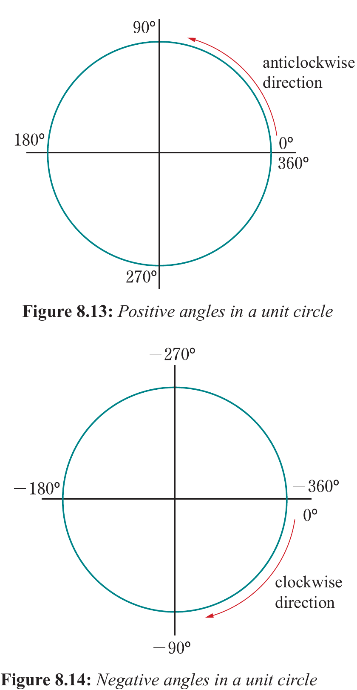

Positive and negative angles
Angles may be positive or negative depending on the direction in which the angle is measured. Figure 8.12 gives the clockwise and anticlockwise measurements of an angle.

In Figure 8.12, it can be deduced that, angles measured in the clockwise direction from the positive x-axis are negative. Angles measured in the anticlockwise direction from the positive x-axis are positive.
Figures 8.13 and 8.14, illustrate how positive and negative angles can be located in the four quadrants. The corresponding positive and negative angles whose trigonometric ratios are the same can easily be found.

If θ is positive, the negative angle corresponding to θ is (−360 + θ). If θ is negative, the positive angle corresponding to θ is (360 + θ).
Note: